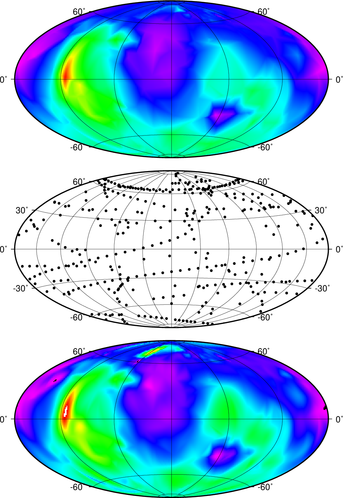

(36) Spherical gridding using Renka’s algorithms¶
The next script produces the plot in Figure. Here we demonstrate how sphinterpolate can be used to perform spherical gridding. Our example uses early measurements of the radius of Mars from Mariner 9 and Viking Orbiter spacecrafts. The middle panels shows the data distribution while the top and bottom panel are images of the interpolation using a piecewise linear interpolation and a smoothed spline interpolation, respectively. For spherical gridding with large volumes of data we recommend sphinterpolate while for small data sets (such as this one, actually) you have more flexibility with greenspline.
#!/bin/bash
# GMT EXAMPLE 36
# $Id$
#
# Purpose: Illustrate sphinterpolate with Mars radii data
# GMT modules: psxy, makecpt, grdimage, sphinterpolate
# Unix progs: rm
#
ps=example_36.ps
# Interpolate data of Mars radius from Mariner9 and Viking Orbiter spacecrafts
gmt makecpt -Crainbow -T-7000/15000 > tt.cpt
# Piecewise linear interpolation; no tension
gmt sphinterpolate mars370.txt -Rg -I1 -Q0 -Gtt.nc
gmt grdimage tt.nc -JH0/6i -Bag -Ctt.cpt -P -Xc -Y7.25i -K > $ps
gmt psxy -Rg -J -O -K mars370.txt -Sc0.05i -G0 -B30g30 -Y-3.25i >> $ps
# Smoothing
gmt sphinterpolate mars370.txt -Rg -I1 -Q3 -Gtt.nc
gmt grdimage tt.nc -J -Bag -Ctt.cpt -Y-3.25i -O -K >> $ps
gmt psxy -Rg -J -O -T >> $ps
# cleanup
rm -f tt.cpt tt.nc

{kind=link}
Spherical gridding using Renka’s algorithms.